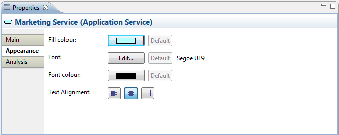
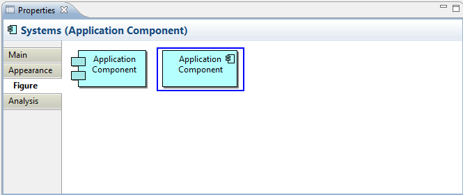

Selecting an element in a View means that you can edit or view additional visual properties in the Properties Window. Different visual settings can be applied to an element for each separate occurrence in a View. For example, the element "Application Service" may be coloured blue in one View, and grey in another View.
The Appearance Tab
This tab is only available when an element is selected in a View.
| Fill colour: | Specifies the fill colour for the selected element. The "Default" button sets the fill colour to the default setting. |
| Font: | Specifies the font used for the text in the selected element. The "Default" button sets the font to the default setting as set in Preferences. |
Font colour: |
Specifies the colour of the font used for the text in the selected element. The "Default" button sets the fill colour to the default setting. |
| Text Alignment: | Align text in the selected element to Left, Centred or Right. |

Editing the "Appearance" Properties for an ArchiMate Element in a View
The Figure Tab
This tab is only available when an element is selected in a View and only for certain figures - Business Interface, Application Interface, Infrastructure Interface, Application Component, Device, and Node.
Some elements can be represented by different figures. These are:
Application Interface
Business Interface
Infrastructure Interface
Application Component
Node
Device

Setting the "Figure" Properties for a Device
The default figure to use when creating new elements can be set in Preferences.